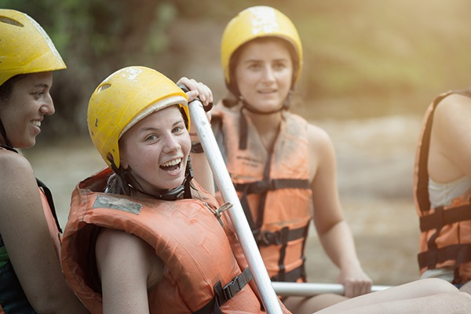

At Rafting Mountain Adventurers, we are dedicated to delivering unforgettable outdoor adventures on the rushing waters of Utah Rivers. As we embark on our journey to establish an online presence, our purpose is crystal clear: to connect, engage, and inspire adventurers of all kinds.

Rafting Mountain Adventurers
History
Once upon a time, there was a wild and mysterious river known as "The River of Adventures." This river meandered through a lush tropical forest, cutting deep into the mountains, creating breathtaking canyons and roaring waterfalls. It was a place where nature roared at its fullest, a sanctuary of beauty and excitement.
On the banks of this river, a group of friends passionate about adrenaline and exploration had founded a rafting company. They named their company "Rafting Mountain Adventurers." They were determined to share the wonder and thrill of navigating the turbulent waters of the River of Adventures with people from all over the world.
Adventure Awaits You!